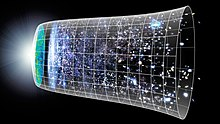

Technology is the result of accumulated knowledge and application of skills, methods,
and processes used in industrial production and scientific research. Technology is embedded in the
operation of all machines, with or without detailed knowledge of their function, for the intended
purpose of an organization. The technologies of society consist of what is known as systems. Systems
operate by obtaining an input, altering this input through what is known as a process, and then
producing an outcome that achieves the intended purpose of the system.
The earliest and simplest form of technology is the development of knowledge that leads to the
application of basic tools. The prehistoric invention of shaped stone tools and the discovery of how to
control fire increased the sources of food that were available to human beings. The invention of the
wheel led to the travelling technologies that helped humans to further increase the yield of food
production, travel in less time, and exchange information and raw materials faster. Humanity then
progressed to the development of the printing press, the telephone, the computer, and then the
Internet.. ..more Info? Click here...
Free Thought
Figure 2: The pansy, a symbol of freethought.
Freethought (sometimes spelled free thought) is an epistemological viewpoint which
holds that beliefs should not be formed on the basis of authority, tradition, revelation, or dogma, and
that beliefs should instead be reached by other methods such as logic, reason, and empirical
observation. According to the Oxford English Dictionary, a freethinker is "a person who
forms their own ideas and opinions rather than accepting those of other people, especially in religious
teaching." In some contemporary thought in particular, free thought is strongly tied with rejection of
traditional social or religious belief systems.The cognitive application of free thought is known as
"freethinking", and practitioners of free thought are known as "freethinkers".Modern freethinkers
consider free thought to be a natural freedom from all negative and illusive thoughts acquired from
society..
The term first came into use in the 17th century in order to refer to people who inquired into the basis
of traditional beliefs which were often accepted unquestioningly. Today, freethinking is most closely
linked with deism, secularism, atheism, agnosticism, humanism, anti-clericalism, and religious critique.
The Oxford English Dictionary defines freethinking as, "The free exercise of reason in matters of
religious belief, unrestrained by deference to authority; the adoption of the principles of a
free-thinker." Freethinkers hold that knowledge should be grounded in facts, scientific inquiry, and
logic. The skeptical application of science implies freedom from the intellectually limiting effects of
confirmation bias, cognitive bias, conventional wisdom, popular culture, urban myth, prejudice, or
sectarianism.. ..more Info? Click here...
LifeScience
Figure 3: Different kinds of living creatures studied in life sciences
This list of life sciences comprises the branches of science that involve the
scientific study of life – such as microorganisms, plants, and animals including human beings. This
science is one of the two major branches of natural science, the other being physical science, which is
concerned with non-living matter. Biology is the overall natural science that studies life, with the
other life sciences as its sub-disciplines.
Some life sciences focus on a specific type of organism. For example, zoology is the study of animals,
while botany is the study of plants. Other life sciences focus on aspects common to all or many life
forms, such as anatomy and genetics. Some focus on the micro-scale (e.g. molecular biology,
biochemistry) other on larger scales (e.g. cytology, immunology, ethology, pharmacy, ecology). Another
major branch of life sciences involves understanding the mind – neuroscience. Life sciences discoveries
are helpful in improving the quality and standard of life and have applications in health, agriculture,
medicine, and the pharmaceutical and food science industries... ..more Info? Click here...
Physical Science

Figure 4: Part of a series on Science
Physical science is a branch of natural science that studies non-living systems, in
contrast to life science. It in turn has many branches, each referred to as a "physical science",
together called the "physical sciences".
Branches of Physical Science
Physics-natural and physical science could involve the study of matter and its motion
through space and time, along with related concepts such as energy and force. More broadly, it is the
general analysis of nature, conducted in order to understand how the universe behaves.
Astronomy-study of celestial objects (such as stars, galaxies, planets, moons,
asteroids, comets and nebulae), the physics, chemistry, and evolution of such objects, and phenomena
that originate outside the atmosphere of Earth, including supernovae explosions, gamma-ray bursts, and
cosmic microwave background radiation.
Chemistry-studies the composition, structure, properties and change of matter.In this
realm, chemistry deals with such topics as the properties of individual atoms, the manner in which atoms
form chemical bonds in the formation of compounds, the interactions of substances through intermolecular
forces to give matter its general properties, and the interactions between substances through chemical
reactions to form different substances.
Earth science-all-embracing term referring to the fields of science dealing with planet
Earth. Earth science is the study of how the natural environment (ecosphere or Earth system) works and
how it evolved to its current state. It includes the study of the atmosphere, hydrosphere, lithosphere,
and biosphere.
General principles of the physical sciences
Principle – law or rule that has to be, or usually is to be followed, or can be desirably followed, or
is an inevitable consequence of something, such as the laws observed in nature or the way that a system
is constructed. The principles of such a system are understood by its users as the essential
characteristics of the system, or reflecting system's designed purpose, and the effective operation or
use of which would be impossible if any one of the principles was to be ignored.
Basic principles of physics
Physics – branch of science that studies matter and its motion through space and time, along with
related concepts such as energy and force. Physics is one of the "fundamental sciences" because the
other natural sciences (like biology, geology etc.) deal with systems that seem to obey the laws of
physics. According to physics, the physical laws of matter, energy and the fundamental forces of nature
govern the interactions between particles and physical entities (such as planets, molecules, atoms or
the subatomic particles) ..more Info? Click here....
HUMAN BEING BIGGEST WEALTH IS KNOWLEDGE BECAUSE IT CANNOT BE ROBBED AND ALWAYS INCREASES BY SHARING